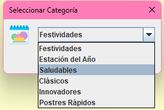

Seleccionar Categoría del Postre
Selecciona una categoría que describa el tipo de postre.
Categorías: Festividades, Estación del año, Saludables, Clásicos, Innovadores,Postres Rápidos.
Pasos:
- Haz clic en el botón Seleccionar categoría del postre.
- Elige una categoría del menú desplegable.
- Presiona Aceptar para guardar la selección.
